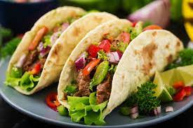

Tacos

A fun dinner for the whole family
Required ingredients
- Beef mince (500g)
- Tomatoes (200g)
- Lettuce (100g)
- Carrots (100g)
- Cheese (100g)
- Onion (One Whole)
- Spice mix (One pack)
- Hard taco shells (8)
Instructions
- Heat a large pan on medium heat and add a splash of olive oil
- Chop onion finely and add to pan, cook until onions are browned
- Add the beef mince to the pan along with the spice mix
- While the mince is cooking, grate cheese and slice vegetables to your liking
- Remove the mince from the heat when brown and leave to rest for a few minutes
- Stack your hard taco shell with the mince, cheese and veges
- Enjoy! :)